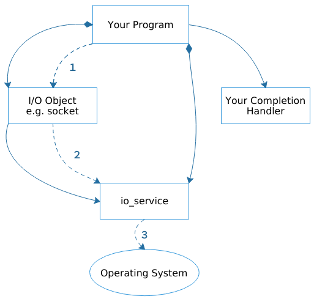

2.1 理解异步操作
异步操作不会阻塞调用者，而是在响应的操作完成后调用一个回调由应用注册的回调函数.大多数基于asio的程序都会使用异步操作. 当一个异步操作被使用，流程如下: 
你的代码通过调用I/O对象初始化一个异步操作
socket.async_connect( server_endpoint, your_completion_handler);async_connect()函数是一个initiating function，在asio中initiating function都是以async_作为前缀，一个initiating function需要一个函数对象(回调函数)作为最后一个参数.这种情况下，你的回调函数应该是个函数或者有一个签名的函数对象void your_completion_handler( const std::error_code& ec);函数签名依赖具体要做的异步操作. asio的指导手册给出了每个操作正确的格式.
I/O对象向
io_service发起请求io_service通知操作系统发起一个异步的连接操作, 在此期间，操作系统接管了应用传递过去的异步操作.- 操作系统完成连接操作后把结果放入一个队列中，提供给
io_service获取 - 你的程序必须调用
io_service::run()(或者类似功能的io_service成员函数)才能获取结果，如果仍然有任务在运行，那么程序阻塞在io_service::run(), 你应该在开始你的异步调用后尽快调用它. - 在
io_service:run()执行时候，io_service到操作队列上获取结果，并转换成error_code，然后把它传给回调函数.